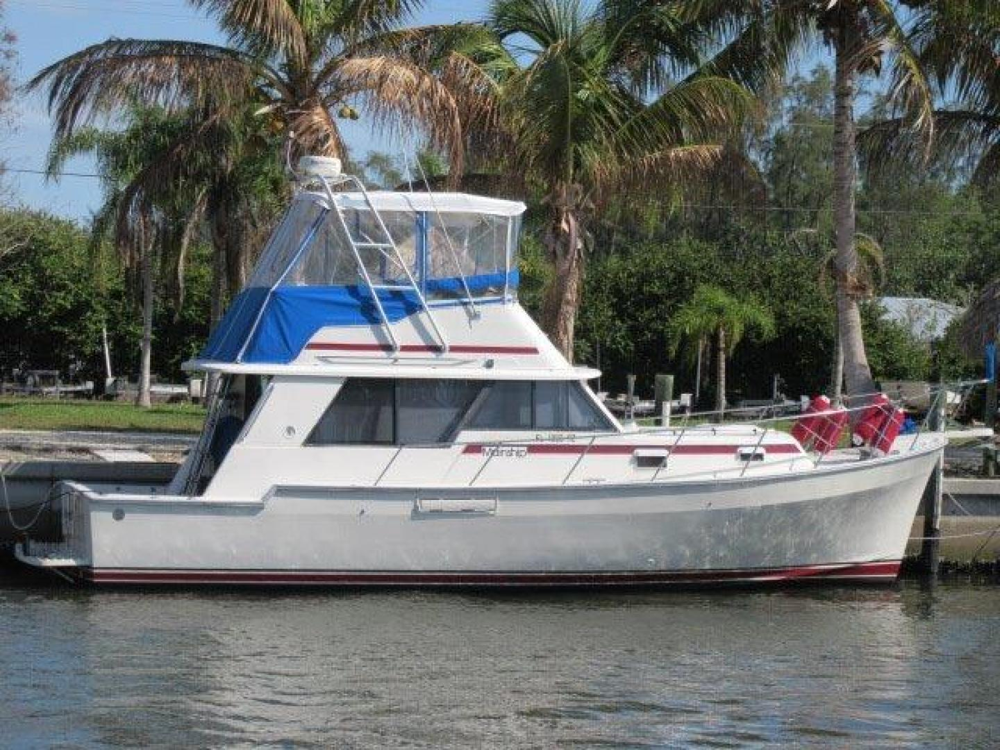

Mainship 34 MKII
1979–1982
The Mainship 34 II is a revised version of the original 34-foot single-diesel flybridge cruiser. It retains the same basic semi-displacement dimensions and economical shaft-drive concept while changing the cockpit, salon and bridge relationship. The model remains primarily a one-stateroom couple’s cruiser with lower and upper helm positions.

- Length
- 34 ft
- Beam
- 11.92 ft
- Draft
- 2.83 ft
- Hull behaviour
- Semi-Displacement
- Fuel
- Diesel
- Propulsion
- Shaft
- Engine configuration
- Single inboard diesel
- Boat family
- Trawler
- Construction
- Solid fiberglass hull with cored deck structures
Best for
- Couples seeking a classic economical flybridge cruiser
- Inland and coastal cruising at moderate speeds
- Buyers willing to verify the exact 34-foot version
Trade-offs
- Single-screw handling requires practice
- One private stateroom limits guest privacy
- Older systems and tanks may require substantial refit
- Production overlap and owner modifications can complicate exact identification
Known concerns
- No model-specific concern has been promoted to B-Scout’s evidence threshold. This does not mean the model has no age-, condition- or hull-specific risks.
Inspection focus
- Confirm that the boat is a 34 II rather than the original 34 or later 34 III
- Inspect deck cores and window or hardware bedding for moisture
- Inspect fuel tanks, exhaust, cooling and electrical modernization
- Inspect shaft, rudder, steering and engine mounts
Continue researching
Related boat models
34 ft · Semi-Displacement
34 ft · Semi-Displacement
34 ft · Semi-Displacement
39.75 ft · Semi-Displacement
39.75 ft · Semi-Displacement
33.08 ft · Semi-Displacement
About this record
B-Scout preserves uncertainty: missing information remains unknown rather than being treated as a negative. Specifications and guidance describe the model record; individual boats can differ by year, equipment, refit and condition.